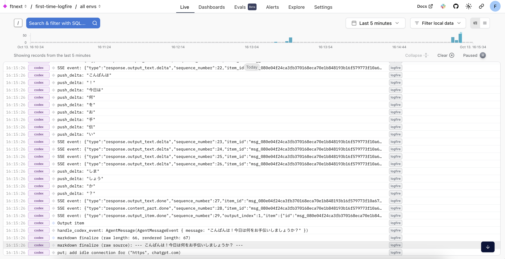

ねぇ、Codex CLI。私だけにあなたのコンテキスト、教えて？
デモ準備メモ
VS Codeでcodex-rs、rust-v0.42.0タグ + ローカルの変更を開く
VS Codeのターミナルで
.env読み込みブラウザは https://logfire-us.pydantic.dev/ftnext/first-time-logfire
ねぇ、Codex CLI。私だけにあなたのコンテキスト、教えて？
- Event:
Codex Meetup Japan #1
- Presented:
2025/10/14 nikkie
お前、誰よ？（Python使い の自己紹介）
nikkie（にっきー）
機械学習エンジニア・LLM・自然言語処理（We're hiring!）
宣伝：書籍『サム・アルトマン』、いかがですか？

持論：コーディングエージェントは 全て 分かりたい
ねぇ、Codex CLI。私だけにあなたのコンテキスト、教えて？
Codexは Rust 実装（codex-rs）
リリース１ヶ月後にはTypeScriptからRustにスクラッチで書き直され
laisoさん 新Codex CLIの使い方
v0.44.0 で OpenTelemetry [1] の実装が入った
#2103 OpenTelemetry events
OpenTelemetry events (#2103 v0.44.0)
~/.codex/config.toml）[otel]
environment = "staging"
exporter = "none"
log_user_prompt = falseotel.exporter を指定して起動
codex -c 'otel.log_user_prompt=true' \
-c "otel.exporter={otlp-http={endpoint=\"https://logfire-us.pydantic.dev/v1/logs\",headers={Authorization=\"Bearer $LOGFIRE_TOKEN\"},protocol=\"json\"}}"今回は Logfire で観測します

Codex CLIのコンテキスト、もっと見たい！
システムプロンプトなど、 どんなコンテキストエンジニアリングをしているか を見たい、分かりたい
Using OpenAI Codex & Pydantic Logfire to Debug Rust Code
Using OpenAI Codex & Pydantic Logfire to Debug Rust Code
Pydantic社による配信のアーカイブ
Logfire という可観測性サービス。Rust向けのSDK も提供
codex-rsにLogfire Rust SDKを組み込んで、Codexの挙動を観測
Codex CLIは手元でビルドできる！
v0.44.0 の前の v0.42.0 (rust-v0.42.0)
cargo run --bin codex
⚠️v0.44.0 で入ったOpenTelemetryの実装とLogfireを一緒に動かせてないです
デモ：手元でビルド〜Logfireに記録
デモ：手元でビルド〜Logfireに記録
まとめ🌯：ねぇ、Codex CLI。私だけにあなたのコンテキスト、教えて？
持論：コーディングエージェントは全て分かりたい -> 可観測性
codex -c でOpenTelemetryのexporterを指定できる
Logfire Rust SDKを組み込む動画に沿ってローカルでビルドし、コンテキストを覗いてみた
ご清聴ありがとうございました
Enjoy coding with Codex!
Appendixが続きます
OpenTelemetryの補足
OpenTelemetry は、テレメトリの送出・処理・受信のオープンソース
ベンダー・ツール非依存
今回テレメトリの保存と表示は Logfire に任せた（他のツールに差し替え可能）
Logfire Rust SDK を入れた箇所
codex-rs/tui/src/lib.rs- let _ = tracing_subscriber::registry().with(file_layer).try_init();
+ let logfire = logfire::configure()
+ .local()
+ .with_service_name("codex")
+ .finish()
+ .expect("Failed to configure Logfire");
+
+ let _ = tracing_subscriber::registry().with(file_layer).with(logfire.tracing_layer()).try_init();拙ブログ Pydantic 社の動画アーカイブに沿って Logfire Rust SDK を追加し、Codex CLI 動作中の情報を Logfire に記録する
Claude Code で可観測性
export CLAUDE_CODE_ENABLE_TELEMETRY=1
export OTEL_LOGS_EXPORTER=consoleGemini CLI で可観測性
export GEMINI_TELEMETRY_ENABLED=true
export GEMINI_TELEMETRY_OUTFILE='gemini-telemetry.log'システムプロンプトまで 見えます
拙ブログ テレメトリを有効にして、Gemini CLI から Gemini API へのリクエスト・レスポンスを覗けるようにする
準備は Codex CLIにコードを読ませて 進めた
試しにcodexに質問したら、Logfire SDKのソースコードまで読みに行っていた
そこからはガンガン読ませていった（ただv0.44.0で動かすまではいけてません）
1回で数万〜10万トークン使うので、Proゆえの富豪アプローチかも（Pulseを体験したくて）
過去のAI駆動開発勉強会LT
Devin Meetup Japan #2 コマンドラインからDevinを呼び出してみないか？
Claude Code Meetup Japan #1 Claude CodeでVibe codingして作った、Claude Codeをコマンドラインから呼ぶためのsimonw/llmプラグイン